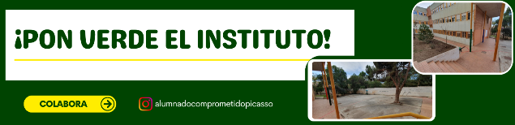
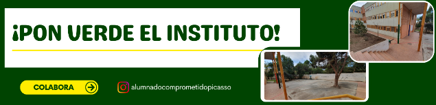

Mi grupo tiene otra idea
¿Tu equipo tiene otra idea para enriquecer el espacio de difusión sobre nuestro proyecto? Seguro que aquí encontraréis la herramienta perfecta para plasmarla. ¡Adelante!

¿Tu equipo tiene otra idea para enriquecer el espacio de difusión sobre nuestro proyecto? Seguro que aquí encontraréis la herramienta perfecta para plasmarla. ¡Adelante!

Uno de los recursos más visuales que existen para trabajar las técnicas de estudio, son las infografías. ¿Te atreves a hacer una?
Autor del vídeo Raúl Diego, publicado con Licencia CC BY.
Recurso digital: Canva.
Autor del vídeo Raúl Diego, publicado con Licencia CC BY.
Recurso digital: Genially.
Material de ampliación: Conoce Genially.
Recurso creado por Raúl Diego, publicado con Licencia CC BY/SA.
¿Sabes crear una presentación, un mapa conceptual, un podcast... pues ahora es el momento de dar un paso más y conocer la forma de crear pósters y trípticos de información?
Autor del vídeo Raúl Diego, publicado con Licencia CC BY.
Recurso digital: Canva.
¿Sabes presentar contenido en formato presentación de diapositivas? ¿Te atreves a crear un presentación en formato Pecha Kucha (20x20)?
Autor del vídeo Raúl Diego, publicado con Licencia CC BY.
Recurso digital: Google Slide.
Autor del vídeo Raúl Diego, publicado con Licencia CC BY.
Recurso digital: Genially.
Material de ampliación: Conoce Genially.
Recurso creado por Raúl Diego, publicado con Licencia CC BY/SA.
¿Te imaginas, por un instante, que te haces adicto de los mapas conceptuales y esquemas? Pues si te acercas a una de estas aplicaciones, no lo descartes. ;-)
Autor del vídeo Raúl Diego, publicado con Licencia CC BY.
Recurso digital: Popplet.
Autor del vídeo Raúl Diego, publicado con Licencia CC BY.
Recurso digital: GoConqr.
Hemos llegado al final del proyecto y os proponemos una reflexión global sobre todo el proceso seguido. Para ello, llevaremos a cabo los siguientes pasos:
Obra publicada con Licencia Creative Commons Reconocimiento Compartir igual 4.0